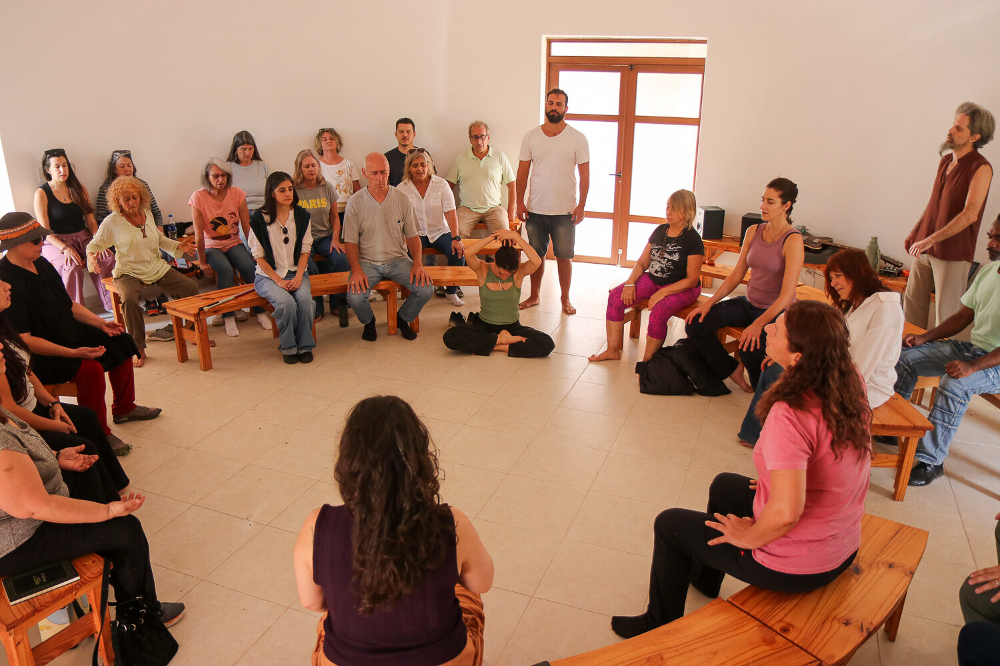
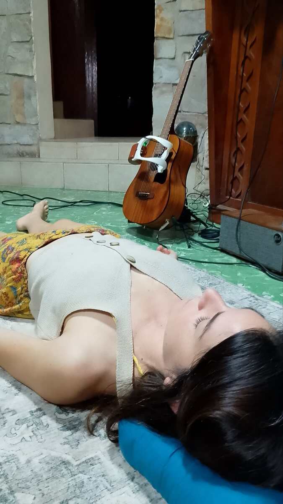
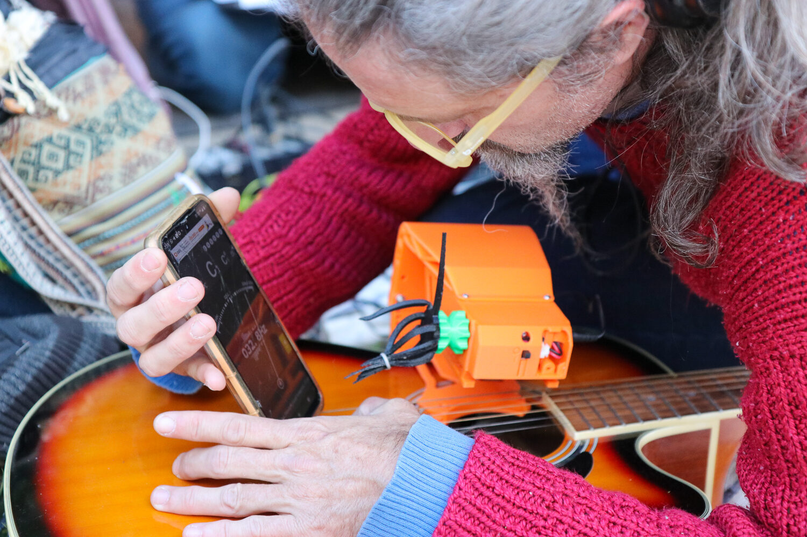
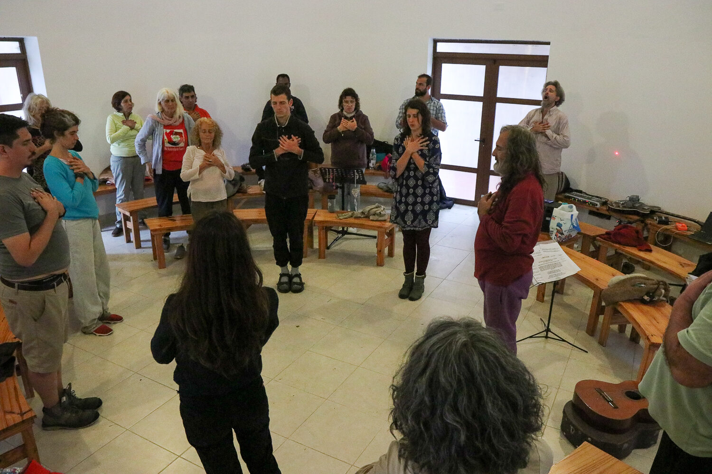
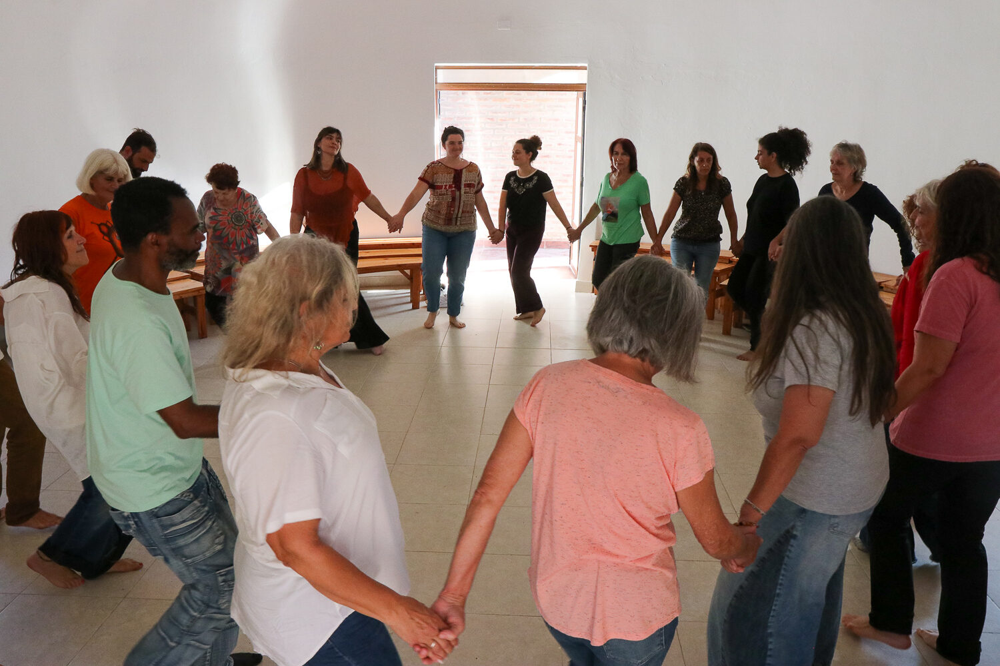
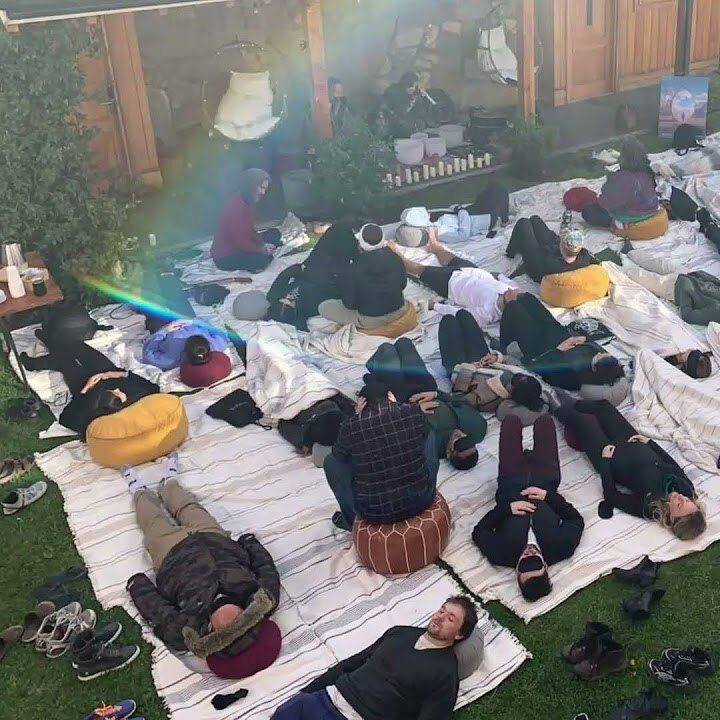
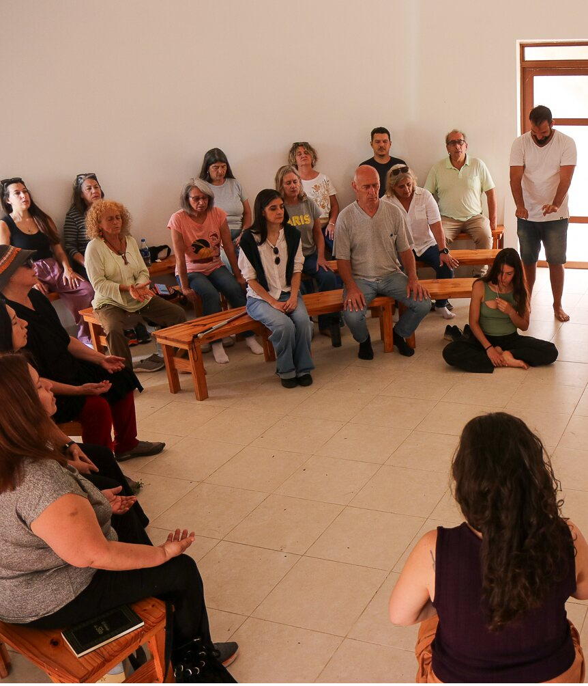

Recurring outreach and brand brief.
An immersive rite that opens every weekend.
We bring together in one place the event concept, the brand proposal, the aesthetic, the audience we speak to and the recurring publishing plan for events every weekend.
Harmonic Myth Projection is a 3-to-4-hour live online immersion: a rite to release the week's noise and descend toward your own personal myth, held by the harmonic field of the Harmonic Beacon.
Current date and time Published at the stable URL
Current date and time Published at the stable URL
Value of the experience: US$20 per person (with packs for those who continue — see economic model).
A journey into the unconscious that leans not on chemical substances or screens, but on sound and symbol. It opens the way to states of deep expansion using only a harmonic field and one's own psyche. It's the ideal container for endogenous expansion and for integrating earlier self-knowledge work.
It's a contemporary rite that inherits the oldest human gesture: withdrawing to listen inward. In the lineage of the vision quest and the hero's journey, brought up to date with serious acoustic research and a psychological method with lineage.
An experimental acoustic device that condenses the signature of the natural harmonic series into a continuous, enveloping sound field. It doesn't reproduce isolated frequencies, but the relationships between them —the proportions of the harmonic series— that the body recognizes as natural order. It's grounded in Harmonic Information Theory (HIT), AlterMundi's research program.
An active-imagination practice created by Julián De La Reta after 15+ years of clinical work. Three roots: Jungian analytical psychology, Joseph Campbell's monomyth (the hero's journey) and psychodrama. The facilitator doesn't interpret: they guide with questions that invite one's own unconscious to reveal its answers.
The music we usually hear uses the tempered scale: it moves through tension and rest, dissonances pushing toward resolution. The Beacon doesn't work that way. Tuned to the natural harmonic series, it offers a stable reference of maximum consonance — a "harmonic cushion" that holds, without demanding resolution.
Within Harmonic Information Theory, that consonance is the system's most efficient configuration. The body stops spending energy "correcting itself" and becomes free for the inner journey.
Not because a frequency heals, but because the field reduces the corrective load and makes room for what is already inside.Brand framing · non-clinical wellbeing and exploration
Important for all copy: the group experience is framed as wellbeing and exploration — it is not therapy. Never "treatment", "cure" or clinical promises. Individual integration sessions are psychotherapy (with a psychologist trained in PMP) and exist separately, as a safety framing. "Proprietary" = internal know-how derived from HIT, never a patent.
Free movement guided by the Harmonic Beacon to shed the "persona" and the week's stiffness. Here each person formulates their inner question.
Lying down and held by the acoustic field, we descend 22 steps toward the unconscious. There, figures appear —guardians, shadows, guides— to dialogue with in search of answers.
After the break, the group shares its images. The facilitator picks key scenes and dramatizes them live with the group, to embody and collectively understand what was discovered.
Harmonic Myth Projection lives inside the Harmonic Beacon visual system. We're not creating a new brand: we're extending the existing one. The feeling is that of a warm, dimly lit temple — old gold, paper, resonance. Quiet luxury. Mystical but sober, never cheap-esoteric.
A 3:2 Lissajous curve (the perfect fifth — the direct link to harmony). A continuous golden line, no fill. Never rotated, distorted or color-filled.
Cormorant Garamond for titles, numbers and italic quotes (the elegant soul). Inter for body, labels and buttons.
Soft golden glows, subtle film grain, fine hairlines, warm-duotone photos, golden roman numerals. Lots of air.
Warm dark background · gold in moderation · elegant serif for titles · Lissajous as seal · warm-duotone photos · italics for emotion · ES/EN in parallel.
Corporate steel-blue · multicolor or neon · rainbow gradients · generic stock icons · emojis in formal pieces · medical claims · gold overload · "magic frequencies".
Source of truth in code: assets/hb-brand.css (tokens + components) and the full guide in BRANDING.md. Campaign assets follow this system.
Real photos from the pilot sessions, treated in warm duotone. No stock, nothing cold. These are the base pieces we use for the web and will reuse across social.







People who have already done —or are looking to do— inner work, and who value a serious, aesthetic experience over generic wellness. We don't promise magic: we offer a method with lineage.
30–60 years old, drawn to Jung, archetypes, psychodrama, mythology, active imagination. They've read, they've done therapy or retreats.
Those seeking deep states of consciousness in an endogenous, lucid and safe way — or wanting to integrate prior experiences.
Sound healing, meditation, somatics, circles. People who already pay for quality wellbeing experiences.
| Region | Edition | Main channel |
|---|---|---|
| Costa Rica (base) | Current ES/EN schedule at the stable URL | Local community, word of mouth, wellbeing circles |
| Argentina / Chile | Current schedule with timezone conversion | Instagram, WhatsApp, Julián's networks |
| Central Europe | Current schedule with timezone conversion | Instagram, email |
| USA (NY/Miami/LA) | Current schedule with timezone conversion | Instagram EN, expat/Latino community |
Conversion insight: the evergreen message explains that encounters happen every weekend. One stable URL publishes the current schedules, prices and availability; each visitor then chooses a concrete session.
The main paid ad is evergreen: live encounters every weekend. It points to one stable URL where current schedules are published. Session-specific reminders may mention a date, but they are not the evergreen ad.
| Day | Piece | Format · channel |
|---|---|---|
| Mon | Threshold announcement — "we open the doors" | Feed + Story · IG/FB |
| Tue | Educational carousel: what the Beacon is + the 3 phases | 1:1 carousel · IG |
| Wed | Real testimonial (social proof) | Reel / quote card · IG |
| Thu | The team behind it — lineage and seriousness | Carousel · IG + email |
| Fri | Publish the currently available weekend times | Story + WhatsApp direct messages |
| Weekend | Session-specific reminder linked to the stable schedule URL | Stories · IG |
Visual engine. Feed for evergreen, stories for the day-to-day, reels for reach. Access / booking link always in the bio.
The real conversion channel: personal ES/EN invitation (already written) + outreach to relevant lists and groups.
To the owned list: the long version of the announcement, with the 3 phases and times. One send Thursday, reminder Friday.
They're already written and ready in ES/EN: WhatsApp direct messages and social/email text. We keep them in a separate file to copy and paste without touching the design.
Contains: WhatsApp message (ES + EN), social/email post (ES + EN), Instagram + X versions, short variations for stories, suggested hashtags and the placeholder for the access link per edition.
There is a threshold between the noise of daily life and your own silence. Our invitation is to cross it.Mother line · use as the main hook
Julián shared the targets. We lay them out clearly here so that, with Logos, we can define exactly how we charge. This is the part where we most need help.
| Product | Price | Note |
|---|---|---|
| Current weekend event | From catalog | Published with the active schedule |
| Single session | US$20 | Base price per encounter |
| Pack of 3 | US$60 | Used whenever you want — no fixed expiry |
| Annual pack | TBD | Extended access / membership |
The point of the packs: they're session credits the person spends at their own pace. That means someone has to keep track of how many sessions each person has left.
We don't fully understand how this works in practice. We need your help with:
What we do know: the economic targets (above). What we need from Logos: the how — the charging plumbing that lets those numbers happen without friction for the participant.
A multidisciplinary AlterMundi team combining harmonic R&D, psychological lineage and engineering.
| Julián De La Reta | Creator of PMP · Psychology degree, Jungian/Psychodrama training, 15+ years of clinical practice |
| Nicolás Echániz | President of AlterMundi · HIT co-author · harmonic R&D lead |
| Mariano Fernández Méndez | HIT co-author · AI / Machine Learning and research |
| Federico Bonino | Sound engineer · acoustic analysis and programming |
| Anabella Scigliano Mattiauda | Researcher · Beacon app/web development |
| Saira Asúa | Product and experience design (UX / group care) |
| John | Integral wellbeing facilitation and group body-based dynamics |
I feel like I got ten years younger… it felt very genuine, not from an external prompt, but coming from within me, without judgment.Ailén
It was very powerful. I was struck by how clear, how vivid the images became… it was easy, the world was made right there.Nelson
I feel comforted… much calmer, with more clarity to see things.Emiliano
I realized my place of power… holding the reins of my life like a king.Karina
Documento de difusión recurrente y marca.
Un rito inmersivo que abre cada fin de semana.
Reunimos en un solo lugar el concepto del evento, la propuesta de marca, la estética, el público al que hablamos y el plan recurrente de difusión para eventos todos los fines de semana.
La Proyección Armónica es una inmersión online en vivo de 3 a 4 horas: un rito para soltar el ruido de la semana y descender hacia el propio mito personal, sostenidos por el campo armónico del Harmonic Beacon.
Fecha y horario vigentes Publicados en la URL estable
Fecha y horario vigentes Publicados en la URL estable
El valor vigente se publica junto a cada sesión en la URL estable de horarios; no se fija en el anuncio evergreen.
Un viaje hacia el inconsciente que no se apoya en sustancias químicas ni en pantallas, sino en el sonido y el símbolo. Abre el camino a estados de profunda expansión usando únicamente un campo armónico y la propia psique. Es el contenedor ideal para la expansión endógena y para integrar trabajos previos de autoconocimiento.
Es un rito contemporáneo que hereda el gesto humano más antiguo: el de retirarse a escuchar hacia adentro. En la estirpe de la búsqueda de visión y el viaje del héroe, actualizado con investigación acústica seria y un método psicológico con linaje.
Un dispositivo acústico experimental que condensa la firma de la serie armónica natural en un campo sonoro continuo y envolvente. No reproduce frecuencias aisladas, sino las relaciones entre ellas —las proporciones de la serie armónica— que el cuerpo reconoce como orden natural. Se apoya en la Harmonic Information Theory (HIT), programa de investigación de AlterMundi.
Práctica de imaginación activa creada por Julián De La Reta tras 15+ años de clínica. Tres raíces: la psicología analítica de Jung, el monomito de Joseph Campbell (el viaje del héroe) y el psicodrama. El facilitador no interpreta: guía con preguntas que invitan al propio inconsciente a revelar sus respuestas.
La música que escuchamos habitualmente usa la escala temperada: avanza por tensión y reposo, disonancias que empujan hacia su resolución. El Beacon no trabaja así. Afinado a la serie armónica natural, ofrece una referencia estable de máxima consonancia — un "colchón armónico" que sostiene, sin pedir resolución.
En el marco de la Harmonic Information Theory, esa consonancia es la configuración más eficiente del sistema. El cuerpo deja de gastar energía "corrigiendo" y queda libre para el viaje interior.
No porque una frecuencia cure, sino porque el campo reduce la carga correctiva y deja lugar a lo que ya está adentro.Encuadre de marca · bienestar y exploración no clínica
Importante para todos los copys: la experiencia grupal se enmarca como bienestar y exploración — no es terapia. Nunca "tratamiento", "cura" ni promesas clínicas. Las sesiones individuales de integración sí son psicoterapia (con un psicólogo formado en PMP) y existen aparte, como marco de seguridad. "Propio / propietario" = know-how interno derivado de HIT, nunca una patente.
Movimiento libre guiado por el Harmonic Beacon para soltar el "personaje" y la rigidez de la semana. Aquí cada persona formula su pregunta interior.
Recostados y sostenidos por el campo acústico, descendemos 22 escalones hacia el propio inconsciente. Allí aparecen figuras —guardianes, sombras, guías— con las que dialogar para encontrar respuestas.
Tras el recreo, el grupo comparte sus imágenes. El facilitador elige escenas clave y las dramatiza en vivo con el grupo, para materializar y comprender colectivamente lo descubierto.
La Proyección Armónica vive dentro del sistema visual de Harmonic Beacon. No creamos una marca nueva: extendemos la existente. La sensación es la de un templo cálido a media luz — oro viejo, papel, resonancia. Lujo silencioso. Místico pero sobrio, nunca esotérico barato.
Curva de Lissajous 3:2 (la quinta justa — el vínculo directo con la armonía). Línea continua dorada, sin relleno. Nunca se rota, deforma ni se llena de color.
Cormorant Garamond para títulos, números y citas en itálica (el alma elegante). Inter para cuerpo, etiquetas y botones.
Glows dorados difusos, grano de película sutil, hairlines finas, fotos en duotono cálido, numeración romana dorada. Mucho aire.
Fondo oscuro cálido · oro con moderación · serif elegante para títulos · Lissajous como sello · fotos en duotono cálido · itálicas para la emoción · bilingüe ES/EN en paralelo.
Azul-acero corporativo · multicolor o neón · degradés arcoíris · íconos genéricos de stock · emojis en piezas formales · claims médicos · saturar de oro · "frecuencias mágicas".
Fuente de verdad en código: assets/hb-brand.css (tokens + componentes) y la guía completa en BRANDING.md. Las piezas de campaña siguen este sistema.
Fotos reales de las sesiones de prueba, tratadas en duotono cálido. Nada de stock, nada frío. Estas son las piezas base que usamos para la web y que reutilizaremos en redes.
Personas que ya hicieron —o buscan hacer— trabajo interior, y que valoran una experiencia seria y estética por encima del wellness genérico. No prometemos magia: ofrecemos un método con linaje.
30–60 años, sensibilidad por Jung, arquetipos, psicodrama, mitología, imaginación activa. Ya leyeron, ya hicieron terapia o retiros.
Quienes buscan estados profundos de conciencia de forma endógena, lúcida y segura — o quieren integrar experiencias previas.
Sound healing, meditación, somática, círculos. Gente que ya paga por experiencias de bienestar de calidad.
| Región | Edición | Canal principal |
|---|---|---|
| Costa Rica (base) | Agenda ES/EN vigente en la URL estable | Comunidad local, boca a boca, círculos de bienestar |
| Argentina / Chile | Agenda vigente con conversión de zona horaria | Instagram, WhatsApp, redes de Julián |
| Europa Central | Agenda vigente con conversión de zona horaria | Instagram, mail |
| EE.UU. (NY/Miami/LA) | Agenda vigente con conversión de zona horaria | Instagram EN, comunidad expat/latina |
Insight de conversión: el mensaje evergreen explica que hay encuentros todos los fines de semana. Una URL estable publica horarios, precios y disponibilidad vigentes; allí cada persona elige una sesión concreta.
El anuncio pago principal es evergreen: encuentros en vivo todos los fines de semana. Comparte una URL estable donde se publican los horarios vigentes. Los recordatorios de una sesión pueden llevar fecha, pero no reemplazan al anuncio evergreen.
| Día | Pieza | Formato · canal |
|---|---|---|
| Lun | Anuncio del umbral — "abrimos las puertas" | Feed + Historia · IG/FB |
| Mar | Carrusel educativo: qué es el Beacon + las 3 fases | Carrusel 1:1 · IG |
| Mié | Testimonio real (social proof) | Reel / placa cita · IG |
| Jue | El equipo detrás — linaje y seriedad | Carrusel · IG + mail |
| Vie | Publicar los horarios disponibles del fin de semana | Historia + mensajes directos WhatsApp |
| Fin de semana | Recordatorio de la sesión enlazado a la URL estable de horarios | Historias · IG |
Motor visual. Feed para lo evergreen, historias para el día a día, reels para alcance. Link de acceso / reserva siempre en la bio.
El canal de conversión real: invitación personal ES/EN (ya redactada) + difusión a listas y grupos afines.
Al listado propio: la versión larga del anuncio, con las 3 fases y horarios. Un envío el jueves, recordatorio el viernes.
Ya están escritos y listos en ES/EN: los mensajes directos de WhatsApp y los textos de redes/mail. Los dejamos en un archivo aparte para copiar y pegar sin tocar el diseño.
Contiene: mensaje de WhatsApp (ES + EN), post de redes/mail (ES + EN), versiones para Instagram + X, variaciones cortas para historias, hashtags sugeridos y el lugar para el link de acceso por edición.
Hay un umbral entre el ruido del día a día y tu propio silencio. Nuestra invitación es a cruzarlo.Frase madre · usar como gancho principal
Julián nos pasó las metas. Las dejamos claras acá para que, con Logos, definamos cómo se cobran concretamente. Esta es la parte donde más ayuda necesitamos.
| Producto | Precio | Nota |
|---|---|---|
| Evento vigente del fin de semana | Desde catálogo | Publicado junto al horario activo |
| Sesión suelta | US$20 | Precio base por encuentro |
| Pack de 3 | US$60 | Se usan cuando querés — sin vencimiento fijo |
| Pack anual | A definir | Acceso extendido / membresía |
La gracia de los packs: son créditos de sesión que la persona va gastando a su ritmo. Eso implica que alguien tiene que llevar la cuenta de cuántas sesiones le quedan a cada quien.
No terminamos de entender cómo se implementa esto en la práctica. Necesitamos que nos ayuden con:
Lo que sí sabemos: las metas económicas (arriba). Lo que necesitamos de Logos: el cómo — la plumbing de cobro que haga que esos números se puedan concretar sin fricción para el participante.
Un equipo multidisciplinario de AlterMundi que combina I+D armónico, linaje psicológico e ingeniería.
| Julián De La Reta | Creador de PMP · Lic. en Psicología, formación Junguiana/Psicodrama, 15+ años de clínica |
| Nicolás Echániz | Presidente de AlterMundi · coautor de HIT · líder de I+D armónico |
| Mariano Fernández Méndez | Coautor de HIT · IA / Machine Learning e investigación |
| Federico Bonino | Ingeniero de sonido · análisis acústico y programación |
| Anabella Scigliano Mattiauda | Investigadora · desarrollo de la app/web Beacon |
| Saira Asúa | Diseño de producto y experiencia (UX / cuidado grupal) |
| John | Facilitación de bienestar integral y dinámicas corporales grupales |
Siento que me rejuvenecí diez años… se sintió muy genuino, no desde una consigna externa, sino que salió desde adentro mío, sin juicio.Ailén
Fue muy potente. Me llamó muchísimo la atención que las imágenes se fuesen tan claras, vívidamente… era fácil, el mundo estaba hecho ahí.Nelson
Me siento reconfortado… mucho más tranquilo, con mayor claridad para ver las cosas.Emiliano
Pude darme cuenta de mi lugar de poder… tener las riendas de mi vivir de una manera como un rey.Karina